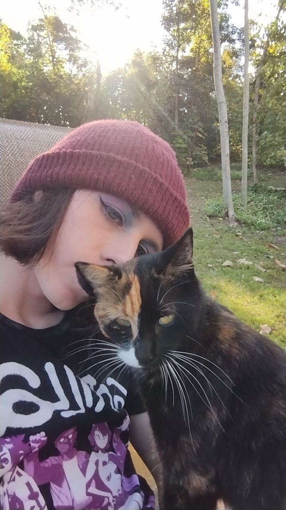

About Pawsitive Rescue
Pawsitive rescue was started in 2020 by two animal lovers who cannot stand seeing helpless pets wandering the streets. In order to keep security and hope alive for our furry friends, we are dedicated to providing around the clock care and support while they find loving homes. Our dream has been kept alive with the help of local vonlunteers and donors who only want the best for all the fur-babies out there.
Meet Our Team
Demi (she/her)

Demi is the cofounder and director of Pawsitive Rescue. She has experience working with animals of all kinds and a big heart for helping those in need. (Harvey is pictured with her, all grown up after claiming Demi as her person.)
Z.Z. (they/them)
Z.Z. is the cofounder and operations manager of Pawsitive Rescue. They have a background in business management and are passionate about creating a safe and efficient environment for our furry friends.